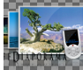
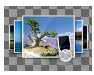
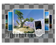

Windows
Windows| Standard
version |
The standard version is the version to be privileged if
you wish to install ffDiaporama on your Windows system. |
Standard |  |
| Without material acceleration version | If the standard version does not work on your computer or if you plan to use ffDiaporama in a virtual machine (Xen, Citrix, VMWare, VirtualBox, etc...) use rather the version without material acceleration. | No Acceleration | |
| Portable
version |
Portable version (without
material acceleration) is design to be launched from an
USB key with the |
Framakey |
 Ubuntu |
Packages are
designed for Ubuntu 11.04 Natty and Ubuntu 10.10
Maverick. For dependencies installation the activation of the Medibuntu repository is mandatory. |
Ubuntu-32 bits, Ubuntu-64 bits |
 Fedora |
Packages are designed for
Fedora 15 and Fedora 14. For dependencies installation the activation of the RPM Fusion repository is mandatory. |
Fedora 15-32 bits,
Fedora 15-64 bits Fedora 14-32 bits, Fedora 14-64 bits |
|  |
Size : 900x896 Format : PNG Transparent : Yes With title : Yes |
|
Size : 320x240 Format : PNG Transparent : No With title : Sí |
|
|
Size : 1280x1024 Format : PNG Transparent : No With title : Yes |
|
|  |
Size : 1280x1024 Format : PNG Transparent : Yes With title : No |
|  |
Size : 1280x1024 Format : PNG Transparent : Yes With title : Yes |
|
Size : 1280x1024 Format : PNG Transparent : No With title : Yes |
|
|
Low contrast icon |
Size : 32x32 Format : PNG Transparent : Yes With title : No |
|
strong contrast icon |
Size: 32x32 Format : PNG Transparent : Yes With title : No |


{kind=link}
{kind=link}
{kind=link}
{kind=link}
{kind=link}
{kind=link}
{kind=link}
{kind=link}